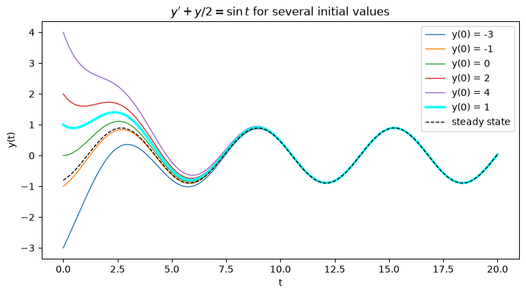
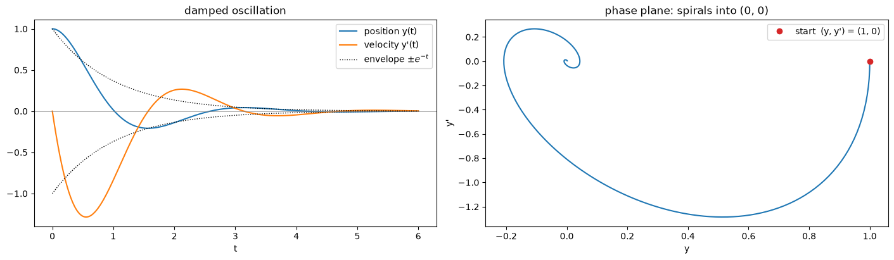

Initial value problems with SymPy#
An initial value problem (IVP) is a differential equation together with the value of the solution (and, for higher order, its derivatives) at one starting point \(t_0\).
The generic forms of first-order and second-order ordinary differential equations (ODEs) with their initial conditions are:
First-order IVP: one initial condition $\( y'(t) = F\big(t, y(t)\big), \qquad y(t_0) = y_0. \)$
Second-order IVP: two initial conditions $\( y''(t) = F\big(t, y(t), y'(t)\big), \qquad y(t_0) = y_0, \qquad y'(t_0) = y'_0. \)$
import sympy as sp
import numpy as np
import matplotlib.pyplot as plt
from IPython.display import display, Math
t = sp.symbols("t")
y = sp.Function("y") # an unknown function y(t)
Part A. A first-order IVP#
Step 1: write the equation#
y = sp.Function("y") makes an unknown function. Then y(t) is the function, and y(t).diff(t) is \(y'(t)\).
We write the equation with sp.Eq(left side, right side).
Use exact numbers. Write \(\tfrac12 y\) as y(t)/2 or sp.Rational(1, 2)*y(t), not 0.5*y(t). With floats, SymPy’s answer gets decimals like 0.4000000 and is harder to read and to simplify.
ode = sp.Eq(y(t).diff(t) + y(t)/2, sp.sin(t))
ode
Step 2: the general solution#
sp.dsolve(ode) returns all solutions of the equation. They contain a free constant C1: a differential equation alone does not fix the solution.
general = sp.dsolve(ode)
display(general)
print(sp.latex(general)) # in latex format
y{\left(t \right)} = C_{1} e^{- \frac{t}{2}} + \frac{2 \sin{\left(t \right)}}{5} - \frac{4 \cos{\left(t \right)}}{5}
The answer is an equation Eq(y(t), ...). Its right side is general.rhs.
\(C_1 e^{-t/2}\): the transient. It solves \(y' + \tfrac12 y = 0\) and dies out.
\(\tfrac25\sin t - \tfrac45\cos t\): the steady state. It is forced by \(\sin t\) and stays.
Step 3: Solving IVP using ics=#
The initial condition \(y(0) = 1\) picks one curve from the family. To find this solution, pass the initial condition as a dictionary ics={y(0): 1} (ics = initial conditions).
sol = sp.dsolve(ode, ics={y(0): 1})
sol
Step 5: check the answer#
Always check. Two things must hold:
the equation: put \(y(t)\) into \(y' + \tfrac12 y - \sin t\). It must simplify to \(0\);
the initial condition: \(y(0)\) must be \(1\).
sp.checkodesol(ode, sol) does check 1 for us and returns (True, 0) if the solution is correct.
Y = sol.rhs
print("initial: y(0) =", Y.subs(t, 0))
print("checkodesol:", sp.checkodesol(ode, sol))
initial: y(0) = 1
checkodesol: (True, 0)
Step 6: plot the solution#
To plot, we turn the SymPy formula into a NumPy function with sp.lambdify.
We also plot the solutions for several other initial values \(y(0) = y_0\). Same equation, different starting points.
Y_num = sp.lambdify(t, Y, "numpy")
tt = np.linspace(0, 20, 400)
fig, ax = plt.subplots(figsize=(9, 4.5))
for y0 in [-3, -1, 0, 2, 4]:
sol = sp.dsolve(ode, ics={y(0): y0})
Y0 = sol.rhs
ax.plot(tt, sp.lambdify(t, Y0, "numpy")(tt), lw=1, label=f"y(0) = {y0}")
ax.plot(tt, Y_num(tt), color="cyan", lw=2.5, label="y(0) = 1")
steady = sp.Rational(2, 5)*sp.sin(t) - sp.Rational(4, 5)*sp.cos(t)
steady_np = sp.lambdify(t, steady, "numpy")
ax.plot(tt, steady_np(tt), "k--", lw=1, label="steady state")
ax.set_xlabel("t"); ax.set_ylabel("y(t)")
ax.set_title(r"$y' + y/2 = \sin t$ for several initial values")
ax.legend(loc="upper right")
plt.show()

Every initial value gives a different solution: this is why the IVP needs \(y(0)\).
After \(t \approx 10\) all curves lie on the same steady state. The transient \(C_1 e^{-t/2}\) has died out: \(e^{-5} \approx 0.007\).
Part B. A second-order IVP#
A mass on a spring, with friction: $\( y'' + 2y' + 5y = 0, \qquad y(0) = 1, \quad y'(0) = 0. \)\( (\)y\( = position; the mass starts at \)y = 1$, at rest.)
A second-order equation has two free constants \(C_1, C_2\), so we need two initial conditions: the position \(y(0)\) and the velocity \(y'(0)\).
Step 1: the general solution#
ode2 = sp.Eq(y(t).diff(t, 2) + 2*y(t).diff(t) + 5*y(t), 0)
sp.dsolve(ode2)
Step 2: one condition is not enough#
With only \(y(0) = 1\), one constant is still free (SymPy calls it C1):
sp.dsolve(ode2, ics={y(0): 1})
Step 3: both conditions#
The condition on the derivative is written as: take \(y'(t)\), then put \(t = 0\):
y(t).diff(t).subs(t, 0) # this is y'(0)
sol2 = sp.dsolve(ode2, ics={y(0): 1, y(t).diff(t).subs(t, 0): 0})
sol2
Y2 = sol2.rhs
print("checkodesol:", sp.checkodesol(ode2, sol2))
print("y(0) =", Y2.subs(t, 0))
print("y'(0) =", Y2.diff(t).subs(t, 0))
checkodesol: (True, 0)
y(0) = 1
y'(0) = 0
Step 4: plot position and velocity#
Y2.diff(t) is the velocity. It is a SymPy expression too, so we lambdify it the same way.
pos = sp.lambdify(t, Y2, "numpy")
vel = sp.lambdify(t, Y2.diff(t), "numpy")
tt = np.linspace(0, 6, 400)
fig, axs = plt.subplots(1, 2, figsize=(14, 4), constrained_layout=True)
axs[0].plot(tt, pos(tt), label="position y(t)")
axs[0].plot(tt, vel(tt), label="velocity y'(t)")
axs[0].plot(tt, np.exp(-tt), "k:", lw=1, label=r"envelope $\pm e^{-t}$")
axs[0].plot(tt, -np.exp(-tt), "k:", lw=1)
axs[0].axhline(0, color="gray", lw=0.5)
axs[0].set_xlabel("t"); axs[0].legend(); axs[0].set_title("damped oscillation")
axs[1].plot(pos(tt), vel(tt))
axs[1].plot(1, 0, "o", color="tab:red", label="start (y, y') = (1, 0)")
axs[1].set_xlabel("y"); axs[1].set_ylabel("y'"); axs[1].legend()
axs[1].set_title("phase plane: spirals into (0, 0)")
plt.show()

Part C. When dsolve cannot find a formula#
Most differential equations have no formula for the solution. For example $\( y' = t + \sin y, \qquad y(0) = 0. \)$
dsolve then raises an error. We catch it with try / except, so the notebook keeps running.
ode3 = sp.Eq(y(t).diff(t), t + sp.sin(y(t)))
try:
sol3 = sp.dsolve(ode3, ics={y(0): 0})
except Exception as e: # dsolve raises an error when it fails
print("SymPy gives up:", e)
SymPy gives up: The given ODE -t - sin(y(t)) + Derivative(y(t), t) cannot be solved by the lie group method
Summary#
first order |
second order |
|
|---|---|---|
equation |
|
|
free constants |
\(C_1\) |
\(C_1, C_2\) |
initial conditions |
|
|
check |
|
|
Always check the equation and the initial condition(s).
Use exact numbers (
sp.Rational,y(t)/2), not floats.Not every equation has a formula:
dsolvecan fail.
Exercises#
Syntax
task |
call |
|---|---|
unknown function |
|
equation |
|
solve the IVP |
|
check |
|
exact fraction |
|
numbers |
|
plot a function |
|
Exercise 1. Solve the IVP $\( y' = y\,(1 - y), \qquad y(0) = \tfrac{1}{10}. \)$
(a) Solve the IVP with dsolve. Check your answer with checkodesol, and check \(y(0)\).
(b) Find \(\lim_{t\to\infty} y(t)\) with sp.limit. Plot the solutions for \(y(0) = 0.1,\ 0.5,\ 1.5\) on \([0, 10]\). What do they all approach?
# Exercise 1
Exercise 2. Solve the second-order IVP $\( y'' - y = t, \qquad y(0) = 1, \quad y'(0) = 0. \)$
(a) Solve the IVP with dsolve and ics= (two initial conditions). Check your answer with checkodesol, and check \(y(0)\) and \(y'(0)\).
(b) Plot \(y(t)\) and \(y'(t)\) on \([0, 2]\).
# Exercise 2